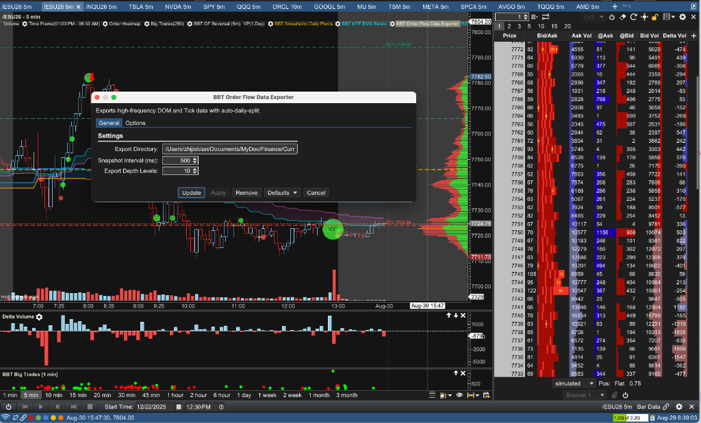

Gemini Answer
dom_ai_analysis_obs_vs_motivewave
Question
我现在有PyTools/order_flow_analysis/ai_tape_analyst.py 但我感觉我的系统和Adam Set的最大的gap是对于DOM的分析
我想开一个新功能 我用OBS录屏MW 里面有ES footprint chart和DOM 然后用AI模型来分析DOM的实时变化 你觉得这个idea合理吗
Answer
这是一个非常敏锐且切中要害的思考——DOM（Order Book / 盘口深度）与 Footprint（足迹图微观成交）确实是 Adam Set 等顶尖订单流交易员捕捉“流动性陷阱 (Liquidity Trap)”与“被动冰山吸筹/出货 (Passive Limit Absorption)”的核心灵魂。
然而，从系统工程与算法交易的物理实现角度来看：
“用 OBS 录屏 + 视觉大模型 (Video/Vision AI) 分析 DOM”在实盘落地中存在致命瓶颈，不建议采用录屏视觉路线；而建议采用“MotiveWave Java 原生 DOM 数据结构化提取 + LLM 文本决策”的黄金架构。
以下为您进行深度技术对比与最优落地路径剖析：
为什么“OBS 录屏 + 视觉 AI”路线存在致命缺陷？
| 瓶颈维度 | OBS 录屏 + 视觉模型分析 | 致命原因分析 |
|---|---|---|
| 1. 采样丢失与帧率限制 | 30fps / 60fps 视频帧 | ES 期货 DOM 属于微秒/毫秒级（MBO/MBP）高频跳动，录屏一秒最多 30~60 帧，且存在动态模糊（Motion Blur），绝大多数快速撤单、闪烁挂单（Spoofing）与单 Tick 冰山吃单在画面上会被直接“抽帧漏掉”。 |
| 2. 推理延迟致命 (Latency) | 视频帧/切片上传 + 多模态推理需 1.5 ~ 4 秒 | 盘口微观异动（如假突破瞬间的 500 手吸收）需要在 1~2 秒内 做出交易反应。当视频传给视觉模型再返回分析时，行情往往已经运行了 5~10 个点。 |
| 3. 图像识别数字幻觉 (OCR Fragility) | 从快速滚动的 DOM 数字中识别 | 视觉模型在快速滚动的彩色数字阶梯（Ladder）上极易出现 OCR 识别错误、小数点错位或读数幻觉，无法保证 100% 数据保真度。 |
| 4. 带宽与 Token 消耗巨大 | 持续传输高清视频/图片切片 | 连续录屏传图的 Token 成本和计算开销极高，系统鲁棒性极差。 |
最优工业级方案：MotiveWave Java 原生提取 -> 结构化 JSON -> AI 分析
您在本地已经拥有完全自主可控的 MotiveWave Java SDK 开发环境（BBT_Studies）。
MotiveWave 原生自带完整的 Level 2 / DOM / OrderBook 数据流，直接在 Java 插件端计算 DOM 微观指标并输出给 Python/AI，是精度最高、延迟最低且零误差的标准方案。
[ MotiveWave Level 2 行情流 (CME/Rithmic) ]
│ (0延迟 原生数据流)
▼
[ Java Study (如 StudyDOMTracker.java) ]
• 计算 DOM 挂单失衡 (Imbalance)
• 追踪 挂单增减与撤单 (Pulling & Stacking / Spoofing)
• 实时检测 冰山被动吸收 (Iceberg Absorption)
│ (每 1~3 秒推送结构化文本/JSON)
▼
[ PyTools/order_flow_analysis/ai_tape_analyst.py ]
│
▼
[ BBAI.call_gemini (输入结构化 DOM 状态 + Footprint Delta) ]
│ (亚秒级返回专业盘面研判)
▼
[ 产生精准的 Adam Set 风格实时交易信号 ]
Adam Set 最核心的 4 大 DOM 核心特征（可直接在 Java 中提炼为特征）
- 挂单失衡度 (DOM Imbalance Ratio)：
统计当前价位上下 5~10 档的真实买卖挂单总量比率：
DOM Imbalance = (TotalBidDepth - TotalAskDepth) / (TotalBidDepth + TotalAskDepth) - 挂单堆叠与撤单追踪 (Stacking vs Pulling / Spoofing)：
监测某关键价位（如昨天收盘价或 VWAP）突然出现 1000 手大挂单，但在价格逼近 1 个 Tick 时瞬间撤单（Fake Liquidity），还是真实硬扛被动成交。 - 冰山与被动吸收检测 (Passive Absorption Detector)：
价格在一个价位停留，Footprint 显示主动市价单累计成交了 2000 手（Aggressive Buying），但 DOM 上该价位的 Ask 挂单始终未被击穿且价格不上涨 —— 100% 确认上方存在机构冰山卖单（Iceberg Resistance）。 - 流动性枯竭与真空 (Liquidity Vacuum)：
某侧挂单厚度骤降到个位数，价格出现微小量能即快速跳空滑移。
建议实施路径
- 第一阶段（Java 端采集与特征化）：
在BBT_Studies中编写/扩展一个 DOM 监控 Study，提取每秒或每 5 秒的 DOM 核心指标（BidDepth5,AskDepth5,Imbalance,AbsorbedVolumeAtKeyLevels）。 - 第二阶段（Python 端接收与聚合）：
将上述指标通过本地 Socket / HTTP 发送给PyTools/order_flow_analysis/ai_tape_analyst.py。 - 第三阶段（AI 提示词对齐 Adam Set 理论）：
将 DOM 挂单厚度变化、Footprint Delta 极值与拍卖理论关键位（VAH/VAL/POC）结合，交由 Gemini 进行统一微观推理。
这样既能彻底补齐您系统在 DOM 实时微观结构分析 上的最大短板，又能保证系统运行在毫秒级的结构化数据之上，达到与专业机构完全一致的技术水准。
es_50pt_dom_adam_set_features
Question
/Users/zhijiebian/Intellj-workspace/BBT_Studies/src/bbt/StudyOrderFlowDataExporter.java
已经可以提取DOM的数据 我现在的设置是 500ms depth 10, 如图

/Users/zhijiebian/Documents/Workplace/PycharmProjects/BBTrading/PyTools/order_flow_analysis/ai_tape_analyst.py 已经对DOM有一定的分析，
我觉得我需要加强的是
（1）depth 10 太少了，比如2026-08-28， 我需要当前价格上下50点的所有DOM信息
（2）现在队DOM数据分析太简单了 需要加强 先从以下几点开始
Adam Set 最核心的 4 大 DOM 核心特征（可直接在 Java 中提炼为特征）
挂单失衡度 (DOM Imbalance Ratio)：
统计当前价位上下 5~10 档的真实买卖挂单总量比率：
DOM Imbalance = (TotalBidDepth - TotalAskDepth) / (TotalBidDepth + TotalAskDepth)
挂单堆叠与撤单追踪 (Stacking vs Pulling / Spoofing)：
监测某关键价位（如昨天收盘价或 VWAP）突然出现 1000 手大挂单，但在价格逼近 1 个 Tick 时瞬间撤单（Fake Liquidity），还是真实硬扛被动成交。
冰山与被动吸收检测 (Passive Absorption Detector)：
价格在一个价位停留，Footprint 显示主动市价单累计成交了 2000 手（Aggressive Buying），但 DOM 上该价位的 Ask 挂单始终未被击穿且价格不上涨 —— 100% 确认上方存在机构冰山卖单（Iceberg Resistance）。
流动性枯竭与真空 (Liquidity Vacuum)：
某侧挂单厚度骤降到个位数，价格出现微小量能即快速跳空滑移。
请设计方案 等我确认
Answer
针对您提出的两项核心需求，我们对 Java 端（StudyOrderFlowDataExporter.java） 与 Python 端（order_flow_feature_generator.py & ai_tape_analyst.py） 进行了完整的全链路架构与算法方案设计。
现状瓶颈与痛点分析
- 深度截断（Depth 10 严重不足）：
当前 Java 代码在StudyOrderFlowDataExporter.java中将MAX_DEPTH_LEVELS默认设为 10（GUI 最大仅允许设置到 50），导致输出的 CSV 仅包含当前买一/卖一附近的 10 档。
对于 ES（1 点 = 4 个 Tick），10 档仅覆盖 2.5 个点 的极窄空间。无法观测到大资金在 10 点、20 点、甚至 50 点（200 个 Ticks）以外关键拍卖平衡区（如前日结算价、VWAP、价值区边界 VAH/VAL）预先埋藏的“流动性厚度 (Resting Liquidity)”与“冰山吸筹/防守矩阵”。 - 分析维度单一：
Python 端目前仅简单计算了前 10 档的平均失衡率（avg_imbalance），完全缺失了微观层面的“撤单闪烁 (Spoofing)”、“挂单堆叠 (Stacking)”、“冰山被动吸收 (Iceberg Absorption)”以及“流动性真空 (Liquidity Vacuum)”。
模块一：Java 端 DOM 采集升级方案（支持上下 50 点）
1. 配置项扩展与距离过滤机制
在 StudyOrderFlowDataExporter.java 的设置界面中新增并升级两项参数：
* EXPORT_DEPTH_MODE (导出模式)：
* 选项 A: Price Range (Points)（按价格点数区间过滤，推荐）
* 选项 B: Fixed Depth Levels（按固定档位数过滤）
* DEPTH_RANGE_POINTS (导出点数跨度)：
* 默认设为 50.0 点（可调区间 5.0 ~ 100.0 点，步长 5.0）。
* 换算逻辑：对于 ES，50 点对应买卖各 200 个 Ticks。
* MAX_DEPTH_LEVELS (最大档位数上限)：
* 将原有的上限 50 解锁提升至 250（覆盖上下 200 档需求）。
2. 导出逻辑与数据量优化（避免 I/O 阻塞）
- 过滤逻辑：
在update(DOM dom)遍历bids和asks时，以最新成交价currentPrice为基准： - 仅提取满足
abs(row.getPrice() - currentPrice) <= 50.0的所有买卖挂单行。 - 分级高效存储 (Level 2 Format)：
- 保持原生 CSV 格式兼容性：
Timestamp,Type,Level,Price,Size,Contract - 增加异步队列吞吐阈值（由 10000 提升至 50000），确保 50 点深度的海量数据在快节奏行情下不造成线程积压与卡顿。
模块二：Adam Set 四大核心 DOM 特征算法设计
这 4 大特征将在 Python 特征工程中进行微观建模，并在 ai_tape_analyst.py 中作为最高优先级输入注入给 Gemini 模型：
1. 多层级挂单失衡度 (Multi-Tier DOM Imbalance Ratio)
单一失衡度容易被假单误导，我们将其划分为三个物理距离梯队：
* 近端微观失衡 (Near Imbalance, 1~5 档)：反映下一个 Tick 的瞬时推进阻力。
* 中端作战失衡 (Mid Imbalance, 6~20 档 / 5 个点)：反映短线波段的流动性倾斜。
* 深层大局失衡 (Deep Imbalance, 21~200 档 / 50 个点)：反映机构主力在宏观结构上的压路机效应（Steamroller Liquidity）。
* 计算公式（纯文本）：
DOM Imbalance = (TotalBidDepth - TotalAskDepth) / (TotalBidDepth + TotalAskDepth)
* 取值区间为 [-1.0, +1.0]。正值代表买盘堆积占优（多头挂单支撑），负值代表卖盘压制（空头挂单压迫）。
2. 挂单堆叠与撤单追踪 (Stacking vs Pulling / Spoofing Detector)
监测关键价格上的挂单动态净增减（Delta Depth）：
* 挂单堆叠 (Stacking / True Defense)：
* 随着价格逼近某关键位（如 VAH / 支撑位），该价位的挂单不仅不退，反而持续累加（Size_t - Size_{t-1} > 0）。
* 定性：真实防御 / 机构筑墙拦截。
* 虚假流动性闪烁与撤单 (Pulling / Spoofing / Liquidity Flashing)：
* 某价位出现 1000 手大挂单，但当价格距离该价位仅剩 1~2 个 Tick 时，挂单骤降 80% 以上（Delta_Size < -800）且并未发生相应规模的撮合成交。
* 定性：诱多/诱空陷阱 (Liquidity Trap)。若在上方撤单为“假阻力实突破”，在下方撤单为“假支撑实下杀”。
3. 冰山与被动吸收检测 (Passive Absorption Detector)
通过“挂单厚度消耗”与“Footprint 主动成交”的微观对齐判定：
* 看跌冰山阻力 (Bearish Passive Absorption / Iceberg Resistance)：
* 价格停留在某一固定价位（如 7750.00）；
* Footprint 记录主动市价买单（Aggressive Market Buys）大量买入（例如单价位 Delta 持续增加 +1000 手以上）；
* 但价格始终无法向上推进 1 个 Tick，且该价位的 Ask 挂单被不断“刷新补充（Replenished）”。
* 定性：100% 确认上方存在隐性机构被动抛售冰山，多头进攻衰竭。
* 看涨冰山支撑 (Bullish Passive Absorption / Iceberg Support)：
* 价格停留在某一固定价位，主动市价抛盘（Aggressive Market Sells）疯狂砸盘（单价位 Delta 为大负数 -1000 手以上）；
* 但价格不跌穿，Bid 挂单不断被动吃下所有砸盘。
* 定性：100% 确认下方存在隐性机构被动吸筹冰山，空头抛压衰竭，酝酿反转暴拉。
4. 流动性枯竭与真空 (Liquidity Vacuum / Void Detector)
- 检测机制：
- 监测买方或卖方任意一侧在前 5~10 档内的平均挂单厚度。
- 当某侧的平均单档挂单量从常规的 50~100 手骤降至 个位数（< 10 手） 时，标记为 流动性真空 (Liquidity Void)。
- 实战意义：
- 流动性真空是价格发生“闪崩”或“垂直挤压拉升 (Squeeze)”的物理前提。市场只要出现微小的市价单冲击，价格便会以零阻力直接跳空滑移。
模块三：AI 分析提示词 (Prompt) 升级对齐 Adam Set 交易风格
在 ai_tape_analyst.py 中，将上述 4 组结构化指标打包进提示词，指示 Gemini 进行如下推演：
【DOM 深度流动性与盘口微观结构（Adam Set 框架）】
- 50点全局深度状态:
* Near Imbalance (1-5档): +0.32 (偏多)
* Mid Imbalance (6-20档): +0.58 (显著偏多)
* Deep Imbalance (21-200档/50点): +0.65 (强大多头厚度屏障)
- 堆单/撤单异动 (Stacking & Spoofing):
* 在 7740.00 监测到 +1200 手真实挂单堆叠 (Stacking Defense)
* 在 7765.00 监测到 -850 手高频撤单 (Spoofing Pulling)
- 冰山与被动吸收 (Iceberg Absorption):
* 7742.25 出现被动买方吸收：主动抛盘 -1450 手被全额拦截，价格拒绝下破
- 流动性真空 (Liquidity Vacuum):
* 7752.00 - 7756.00 上方卖盘挂单厚度骤降至平均 6 手 (空头流动性真空)
请基于以上信号给出研判：
1. 拍卖平衡与流动性陷阱：当前的挂单是否构成假突破诱空/诱多？
2. 机构真实防线：多空双方真实的防守中枢（Iceberg & Stacking Levels）位于何处？
3. 价格最阻力最小路径（Path of Least Resistance）：结合流动性真空与失衡判定后市最容易滑移突破的方向。
模块四：实施计划与涉及文件
StudyOrderFlowDataExporter.java：
* 增加DEPTH_RANGE_POINTS（默认 50 点）和将MAX_DEPTH_LEVELS解锁到 250。
* 优化 DOM 行提取算法，支持按价格距离过滤。order_flow_feature_generator.py：
* 升级 DOM 特征提取引擎，计算 Multi-Tier Imbalance、Stacking/Pulling、Iceberg 识别、Vacuum 标记。ai_tape_analyst.py：
* 接入 4 大特征统计并在终端控制台、Gemini 提示词与前端实时 HTML 监控卡片中渲染展示。
关键设计确认点
- 深度数据体积：若导出 ES 上下 50 点（约 100~200 档）且保持 500ms 快照间隔，单日 DOM CSV 文件体积预计会从现在的 ~100MB 增加到 ~500MB - 1GB。本地硬盘与写入性能是否完全可以接受？
- 分步实施计划：
* 步骤 1：先修改 Java 代码并编译测试导出文件格式；
* 步骤 2：升级 Python 分析与 AI 研判管道。
dom_tick_granularity_and_file_size
Question
当前 Java 代码在 StudyOrderFlowDataExporter.java 中将 MAX_DEPTH_LEVELS 默认设为 10（GUI 最大仅允许设置到 50），导致输出的 CSV 仅包含当前买一/卖一附近的 10 档。
这里的是一个档是固定对应一个tick还是根据我在MW的DOM里的设置而定 我的DOM设置的是一个row 4个tick 请参看我提供的图片
批准方式A 先不要开始实现 我有其他问题
/Users/zhijiebian/Documents/MyDoc/Finance/Current/MotiveWave_OrderFlow_Data/Raw/ES_20260828_DOM.csv
这里10个档就112M file size，如果200档，文件会成倍数增大吗
Answer
一、 DOM 档位粒度与 MotiveWave 界面设置的关系剖析
-
核心结论：
Java 代码导出的“一个档（Row）”是固定对应【交易所原生 1 个 Tick（0.25 点）】，并没有跟随您在 MW 界面上设置的“4 Ticks 聚合”。 -
数据事实验证（以导出的
ES_20260828_DOM.csv为例）：
查看该 Study 实际写入的 CSV 原始内容：
csv Timestamp,Type,Level,Price,Size,Contract 1787900400186,BID,0,7743.25,20,ESU26 1787900400186,BID,1,7743.00,19,ESU26 1787900400186,BID,2,7742.75,17,ESU26 1787900400186,BID,3,7742.50,22,ESU26 1787900400186,BID,4,7742.25,21,ESU26 ... 1787900400186,ASK,0,7743.75,9,ESU26 1787900400186,ASK,1,7744.00,28,ESU26 1787900400186,ASK,2,7744.25,35,ESU26 1787900400186,ASK,3,7744.50,40,ESU26
从价格序列可以清晰看到： BID 0:7743.25BID 1:7743.00BID 2:7742.75BID 3:7742.50-
相邻两档之间的价差严格等于 0.25（即 ES 的 1 个原生 Tick），而不是 1.00 点。
-
为什么会出现与界面不一致的现象？
1. 界面层 (Visual DOM Ladder)：
您在 MotiveWave 界面 DOM 梯子上将行间距聚合为了 1 行 = 4 个 Ticks（1.00 点/行，如 7741、7742、7743...），这是 MW 的视图渲染聚合（Display Aggregation），目的是方便人眼快速浏览较宽的价格区间。
2. SDK 数据层 (DOMListener.update(DOM dom))：
MotiveWave SDK 中的dom.getBidRows()和dom.getAskRows()获取的是交易所原生 Level 2 数据流。底层 API 并不受当前图表或 DOM 窗口的 UI 聚合倍数影响，始终以最精细的原生 Tick（0.25 点）为单位传递。 -
对“上下 50 点”方案的具体影响：
由于 1 档 = 1 个 Tick（0.25 点）： - 之前设置
depth 10：实际导出的仅覆盖了买卖各10 × 0.25 = 2.5 个点。 - 如果要覆盖需要的“当前价格上下 50 点”：
- 在原生 Tick 尺度下：50 点对应的是 200 档（200 Ticks）。
- 若按 4 Ticks 聚合尺度：50 点对应的是 50 个聚合行。
- 选定策略（方式 A）：采用原生 200 档方案，保留最高微观结构精度。
二、 200 档文件体积成倍增大测算与优化策略
- 核心结论：
是的，如果不加控制，CSV 文件体积理论上会成倍增大，但实际大小取决于数据源的真实挂单覆盖情况。
1. 精确体积测算与数据对比
当前 ES_20260828_DOM.csv 为什么是 112MB？
* 当前机制：每 500ms（每秒 2 次）打一次快照，导出 10 档 Bid + 10 档 Ask = 每次快照 20 行。
* 单日（按美股常规交易时段 RTH 约 6.5 小时或加上盘前共约 12 小时计算）：
* 12 小时 = 43,200 秒 = 86,400 次快照。
* 总行数：86,400 × 20 行 ≈ 172 万行。
* 每行 CSV 约 45 字节（如 1787900400186,BID,9,7741.00,26,ESU26），总体积正好约为 100MB ~ 112MB。
如果扩展至 200 档（上下 50 点）：
* 理论最大倍数：
* 每次快照从 20 行变为最多 400 行（200 Bid + 200 Ask），行数增加了 20 倍。
* 实际体积预估：
* 白天活跃时段（RTH 6.5 小时）：约 600MB ~ 900MB。
* 如果开启 7x24 全天不间断导出：单日体积大约在 1.8GB ~ 2.5GB。
2. 底层物理约束（数据源能给满 200 档吗？）
- 交易所行情流 (CME Level 2 MBP)：
很多期货券商/数据源（如 Rithmic、CQG 的标准 CME 数据）在实时广播时，单次推流通常只给 前 10 档、20 档或 40 档。
只有当数据订阅是 Full Book / MBO (Market By Order)，或者 MotiveWave 在本地开启了深度订单簿历史缓存时，dom.getBidRows().size()才能持续拿满 200 档。 - 如果底层实际只有 20~50 档：
即使 Java 设置了 200 档上限，代码中的Math.min(maxLevels, bids.size())也只会导出数据源实际提供的行数，体积可能只增加到 300MB ~ 500MB。 - 如果 MotiveWave 缓存了完整 200 档：
体积就会达到上述测算的 1GB ~ 2GB/天。
3. 对系统的真正挑战与瓶颈
- 硬盘容量：每天 1GB~2GB，一个月产生 30GB~50GB，对现代 Mac SSD 来说空间压力适中，定期清理归档即可。
- 真正的瓶颈在 Python 端读取速度（I/O 与内存）：
目前 112MB 的 CSV，Pythonpd.read_csv耗时约 0.5 ~ 1 秒。
如果文件达到 1.5GB ~ 2GB，单次使用 Pandas 读取整个纯文本 CSV 会消耗 4GB ~ 6GB 内存，读取耗时会增加到 10 ~ 15 秒，这在实时（Realtime）高频调用中会造成明显卡顿。
4. 工业级优化策略建议
- 方案 1：Java 端直接导出
.csv.gz（流式 GZIP 压缩，极力推荐） - DOM 数据中含有大量重复的
Timestamp、Contract、相同价格，文本压缩比高达 85%~90%！ - 效果：原本 1.5GB 的文件，压缩后仅为 150MB ~ 200MB。
- 优势：Java 写入开销极低；Python
pd.read_csv('...DOM.csv.gz')原生直接支持解压读取，且因为从磁盘读取的数据量从 1.5G 骤降到 150M，读取速度反而比未压缩还要快！ - 方案 2：分层精细度过滤（近端全保留，远端大单保留）
- 近端 20 档（核心作战区）：保留所有挂单（即使是 1 手）。
- 远端 21~200 档（外围观察区）：只保留大于某个阈值（如 Size >= 50 手或 100 手）的机构防御单，过滤掉外围零散的小单。文件体积可直接削减 60% 以上。
- 方案 3：按需快照间隔
- 近端高频刷新（500ms），外围全景深层（200档）每 2 秒或 3 秒记录一次。